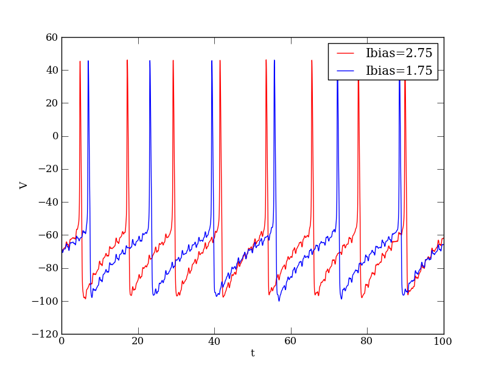

Site navigation:
See Tutorial_compneuro.py.
This tutorial constructs the Hodgkin-Huxley equations for a spatially-clamped neural membrane using the ModelSpec symbolic tools and the computational neuroscience toolbox templates provided by PyDSTool.
"""
PyDSTool Tutorial for building a Hodgkin-Huxley neuron using the ModelSpec approach.
This tutorial builds the model specification by specifying each parameter
and state variable equation by hand.
The model specification is passed to a ModelConstructor which is given all the
parameters and variables describing the system, the initial conditions, and
parameters for the Generator (ODE Solver). It checks for model consistency
before generating code that implements the numerical integration within Python
or using external compilers. A Model object is extracted from the
ModelConstrutor and all methods for solving the equations (computing a
Trajectory) and sampling data points for plotting operate on the Model.
"""
from PyDSTool import *
from PyDSTool.Toolbox.neuralcomp import *
# voltage is already defined as the string 'V'
v = Var(voltage)
"""
Here we use an args datatype to hold information about each channel.
This allows us to easily specify the state variable equations later.
An args emulates both struct dot and dictionary notation for retrieving
its contents.
"""
NaF = args()
# Here are some parameters
NaF.g = Par(100, 'g')
NaF.Erev = Par(50, 'vrev')
# Here are the state variables
NaF.m = Var('m')
NaF.h = Var('h')
# Here are the forward and backward rate equations for each gate
# These are QuantSpec types that store the expression as a string
NaF.malpha = 0.32*(v+54)/(1-Exp(-(v+54)/4))
NaF.mbeta = 0.28*(v+27)/(Exp((v+27)/5)-1)
NaF.halpha = .128*Exp(-(50+v)/18)
NaF.hbeta = 4/(1+Exp(-(v+27)/5))
# defining RHS expressions with a name attribute that matches a Variable creates an ODE for it
NaF_m_RHS = Var(NaF.malpha*(1-NaF.m)-NaF.mbeta*NaF.m, name=NaF.m.name, domain=[0,1], specType = 'RHSfuncSpec')
NaF_h_RHS = Var(NaF.halpha*(1-NaF.h)-NaF.hbeta*NaF.h, name=NaF.h.name, domain=[0,1], specType = 'RHSfuncSpec')
# otherwise, you can write explicit function specifications
# the Var 'I' is reserved by the channel object for the channel current
NaF.I = Var(Pow(NaF.m,3)*NaF.h*NaF.g*(v-NaF.Erev), name='I', specType='ExpFuncSpec')
K = args()
K.g = Par(80, 'g')
K.Erev = Par(-100, 'vrev')
K.n = Var('n')
K.nalpha = .032*(v+52)/(1-Exp(-(v+52)/5))
K.nbeta = .5*Exp(-(57+v)/40)
K_n_RHS = Var(K.nalpha*(1-K.n)-K.nbeta*K.n, name=K.n.name, domain=[0,1], specType = 'RHSfuncSpec')
K.I = Var(Pow(K.n,4)*K.g*(v-K.Erev), name='I', specType='ExpFuncSpec')
L = args()
L.g = Par(0.1, 'g')
L.Erev = Par(-67, 'vrev')
L.I = Var(L.g*(v-L.Erev), name='I', specType='ExpFuncSpec')
"""
Create channel objects by collecting all the parameters and variables for
each. These objects are channels in the sense that the methods for creating
compartment know to look for the 'I' variable in all channels and add them
together and solve C dV/dt = sum of currents.
"""
channel_NaF = channel('NaF') # at minimum, a new channel needs a name
channel_NaF.add([NaF.g,
NaF.Erev,
NaF_m_RHS,
NaF_h_RHS,
NaF.I
])
channel_K = channel('K') # at minimum, a new channel needs a name
channel_K.add([K.g,
K.Erev,
K_n_RHS,
K.I
])
channel_L = channel('L')
channel_L.add([L.g,
L.Erev,
L.I
])
"""
A constant injected current is also specified as a channel.
"""
channel_bias = channel('Ibias')
Ibias = Par(1.75, 'Ibias')
Ib = Var(-Ibias, name='I', specType='ExpFuncSpec')
channel_bias.add([Ibias,Ib])
"""
An external current function is also specified as its own channel.
"""
time = Var('t')
channel_ext = channel('Iext')
mag_ext = Par(3, 'Iext_magfac')
# Surrogate 'noise' function - you could instead replace with real data (see other comp neuro tutorials)
Iext_func = Fun(mag_ext*0.5*(Sin(2.124*time) + \
Sin(5.1*(time+0.2)))*Cos(3*pi*(time-0.1))*Min(Max(Tan(8.982*time*pi+1.3005),8),-8),
('t',), 'Iext_func')
Iext = Var(-Iext_func(time), name='I', specType='ExpFuncSpec')
channel_ext.add([mag_ext,Iext_func,Iext])
"""
Since this is a single compartment neuron, you can choose to make a soma
object or a point neuron object. The result is a ModelSpec object.
"""
cell1 = makeSoma('cell1',channelList=[channel_NaF, channel_K, channel_L,
channel_bias, channel_ext], C=1) # capacitance
"""
Algorithms for the ODE solver are passed through the ModelConstructor when you
create the actual Model. For the Radau and Dopri integrators, you may need to
delete the PyDSTool generated code and libraries before re-running the model.
"""
alg_args = {'init_step': 0.03,
}
#targetGen = 'Radau_ODEsystem'
#targetGen = 'Dopri_ODEsystem'
targetGen = 'Vode_ODEsystem'
"""
Initial conditions must be given for each state variable:
ValueError: Initial condition for K_n has been incorrectly initialized
They should match the NAME attribute of the objects, not their assigned Python
variable name. In the resulting Model object, the outermost layer is
discarded. If this cell belonged to a network containing other cells, then the
appropriate variable names below would be cell1.V, cell1.NaF.m, etc.
Example error:
ValueError: Illegal variable name cell1.V
"""
ic_args_net = {'V': -70.0,
'NaF.m': .2,
'NaF.h': .8,
'K.n': .2,
}
"""
The ModelConstructor has a name attribute. The generatorspecs have a name that
must match the name attribute of the given modelspec.
"""
model_HH = ModelConstructor('HH_model',
generatorspecs={cell1.name:
{'modelspec': cell1,
'target': targetGen,
'algparams': alg_args}
},
indepvar=('t', [0,100])
)
"""
Now get an actual Model object from which you can generate data.
HH_model.allvars prints all state variables
HH_model.pars prints all parameters
HH_model.showSpec() prints out equations for channels and state vars
"""
HH_model = model_HH.getModel()
verboselevel = 2
print "Computing trajectory using verbosity level %d..."%verboselevel
## don't extend tdata past the range given to the ModelConstructor
HH_model.compute(trajname='test',
tdata=[0, 100],
ics=ic_args_net,
verboselevel=verboselevel
)
v_dat = HH_model.sample('test')
plt.figure()
plt.plot(v_dat['t'], v_dat['V'],'b')
"""
Now you can change parameter values/initial conditions and recompute
trajectories.
HH_model.setICs
You can reuse channels in different ModelConstructors and create different
Model objects for comparison.
"""
HH_model.setPars('Ibias.Ibias', 2.75)
HH_model.compute(trajname='test2',
tdata=[0, 10000],
ics=ic_args_net,
verboselevel=verboselevel
)
v_dat2 = HH_model.sample('test2')
plt.plot(v_dat2['t'], v_dat2['V'],'r')
plt.show()
Depending on your local configuration of the Matplotlib interactive mode, the last command plt.show() might not be necessary.
